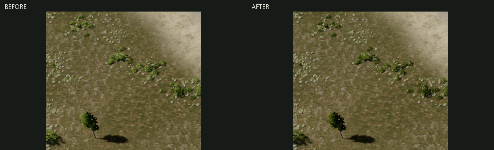
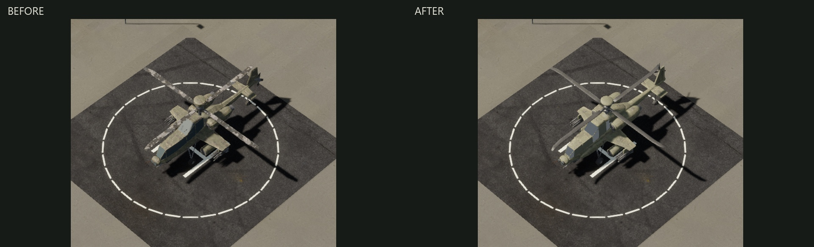
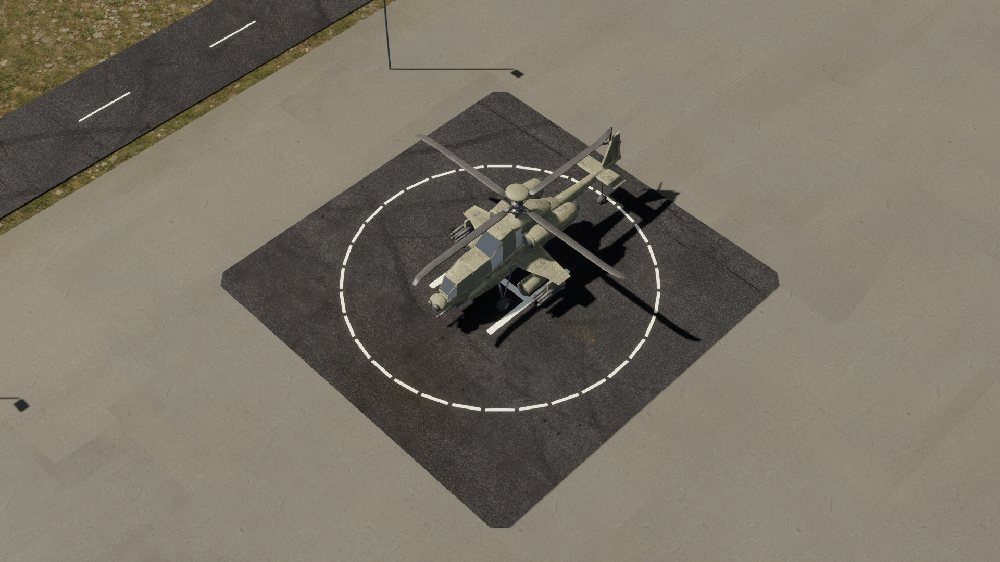

Trees, hedges and shrubs now use darker, muted olive foliage. The rebuilt 17,712-triangle Apache has a stepped tandem cockpit, curved fuselage and engine pods, tapered tail and wings, detailed rocket tubes, rotor head, swept blades, scissor tail rotor, nose optics and aiming chin gun. Its new olive atlas keeps more intact paint and uses restrained service wear.
Native captures use the existing fixed camera and lighting. Source geometry was created against Boeing Apache photographs and British Army references. Applied in the base game and training ground; save and restart an already-running game to load the rebuilt executable.
Editable Blender model · New colour atlas · Exact image-generation prompt · Validation report



Enemy colour · Low texture quality · In flight · Training ground · Other vehicles